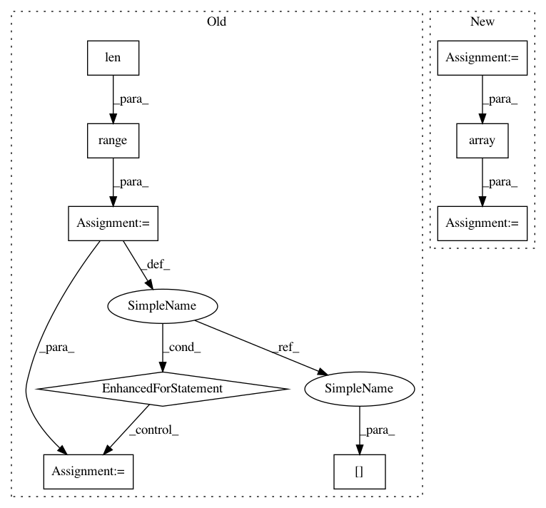

7d9db23a389499c2764fb850cd19f853cc3e8565,ludwig/features/image_feature.py,ImageBaseFeature,add_feature_data,#Any#Any#Any#Any#Any#,192
Before Change
(num_images, height, width, num_channels),
dtype=np.uint8
)
for i in range(len(dataset_df)):
filepath = get_abs_path(
csv_path,
dataset_df[feature["name"]][i]
)
img = ImageBaseFeature._read_image_and_resize(
filepath,
width,
height,
should_resize,
num_channels,
preprocessing_parameters["resize_method"],
user_specified_num_channels
)
try:
data[feature["name"]][i, :, :, :] = img
except:
logger.error(
"Images are not of the same size. "
"Expected size is {}, "
"current image size is {}."
"Images are expected to be all of the same size"
"or explicit image width and height are expected"
"to be provided. "
"Additional information: https://uber.github.io/ludwig/user_guide///image-features-preprocessing"
.format(first_image.shape, img.shape)
)
raise
else:
data_fp = os.path.splitext(dataset_df.csv)[0] + ".hdf5"
mode = "w"
if os.path.isfile(data_fp):
After Change
user_specified_num_channels=user_specified_num_channels
)
all_file_paths = [get_abs_path(csv_path, file_path)
for file_path in dataset_df[feature["name"]]]
if feature["preprocessing"]["in_memory"]:
data[feature["name"]] = np.empty(
(num_images, height, width, num_channels),
dtype=np.uint8
)
with Pool(5) as pool:
logger.info("Using 5 processes for preprocessing images")
data[feature["name"]] = np.array(
pool.map(read_image_and_resize, all_file_paths)
)
else:
data_fp = os.path.splitext(dataset_df.csv)[0] + ".hdf5"
mode = "w"
if os.path.isfile(data_fp):
In pattern: SUPERPATTERN
Frequency: 3
Non-data size: 9
Instances
Project Name: uber/ludwig
Commit Name: 7d9db23a389499c2764fb850cd19f853cc3e8565
Time: 2019-08-08
Author: smiryala@uber.com
File Name: ludwig/features/image_feature.py
Class Name: ImageBaseFeature
Method Name: add_feature_data
Project Name: keras-team/autokeras
Commit Name: 49ca8c83ca65a1060713d0295d1d206b43933e3b
Time: 2017-12-18
Author: jhfjhfj1@gmail.com
File Name: autokeras/generator.py
Class Name: HillClimbingClassifierGenerator
Method Name: generate
Project Name: uber/ludwig
Commit Name: 5667af96dade79ef77194d519182d4989494b3a4
Time: 2019-08-25
Author: smiryala@uber.com
File Name: ludwig/features/image_feature.py
Class Name: ImageBaseFeature
Method Name: add_feature_data
Project Name: uber/ludwig
Commit Name: 7d9db23a389499c2764fb850cd19f853cc3e8565
Time: 2019-08-08
Author: smiryala@uber.com
File Name: ludwig/features/image_feature.py
Class Name: ImageBaseFeature
Method Name: add_feature_data